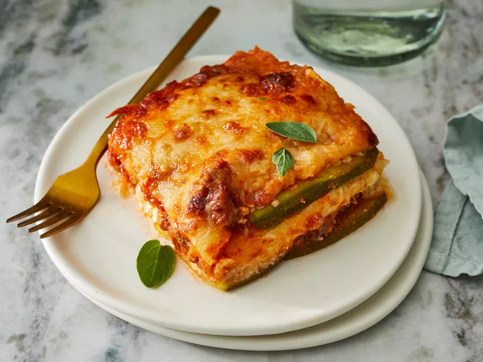

Lasagna
Home

Description
This lasagna is made with zucchini slices instead of pasta. This low-carb,
gluten-free beef lasagna is delicious and satisfying; it's a
crowd-pleaser!
Ingredients
- 1 ½ large zucchinis, thinly sliced lengthwise
- 1 tablespoon olive oil
- 1 pound ground beef
- 1 ½ cups low-carb marinara sauce
- 2 teaspoons salt, divided
- 1 teaspoon dried oregano
- ½ teaspoon ground black pepper
- 1 (8 ounce) container ricotta cheese
- 1 large egg
- ½ teaspoon ground nutmeg
- 2 cups shredded mozzarella cheese
- ¼ cup grated Parmesan cheese
- aluminum foil
Steps
-
Preheat the oven to 375 degrees F (190 degrees C). Grease an 8-inch
square baking dish with cooking spray
-
Pat dry zucchini slices with a paper towel to remove excess moisture Set
aside.
-
Heat olive oil in a saucepan over medium-high heat. Add ground beef;
cook until browned, 5 to 8 minutes